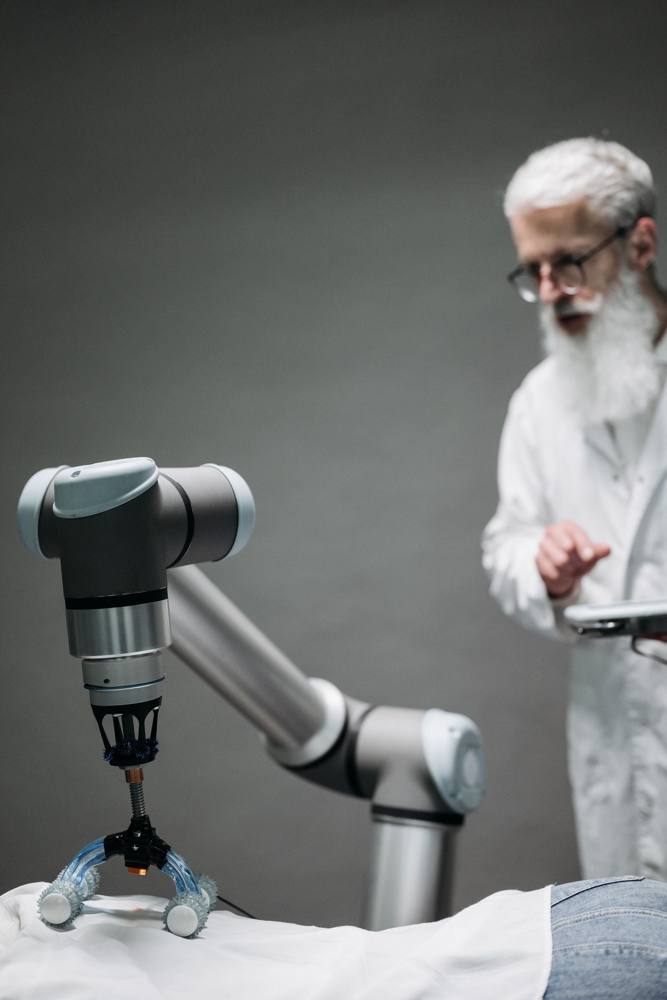

AT THE INSTRUMENT TIP
10.0 mm
ROBOTIC SURGERY, MEASURED BEFORE IT IS MARKETED
I'm Colin Avery — a consultant robotic surgeon and biomedical engineer. I help hospitals build robotic surgery programmes that earn their precision: programme assessment, surgeon training and proctoring, and procurement evaluation. The robot is the easy purchase. The programme around it — case selection, training, scheduling, honest numbers — is the work.

A surgical robot does not have steadier hands than a surgeon. It has arithmetic. Two mechanisms do the work: filtration — every hand trembles at 8–12 Hz, and the console filters that band out — and motion scaling, which divides what is left. Set a hand movement and a scaling ratio, and read what actually arrives at the instrument tip.
CONSOLE SCALING RATIO
HAND MOVEMENT AT THE CONSOLE
3 : 1 — the fine-work default. Dissection and reconstruction live here: a third of your hand's travel arrives at the instrument, and the traverse cost is still reasonable.
| Scaling ratio | Tip movement | Hand travel for a 60 mm traverse | Where it earns its keep |
|---|---|---|---|
| 1 : 1 | 30.0 mm | 60 mm | Gross positioning — reaching, retracting, camera moves |
| 2 : 1 | 15.0 mm | 120 mm | General dissection in open fields |
| 3 : 1 | 10.0 mm | 180 mm | Fine dissection — the working default |
| 5 : 1 | 6.0 mm | 300 mm | Suturing, nerve-sparing planes, anastomosis |
Scaling is not free: divide the movement and you multiply the travel. A surgeon at 5 : 1 moves a hand 300 mm to cross a 60 mm field — which is why scaling is chosen per phase of an operation, not per operation, and why it is taught, not assumed.
Brochures quote a single precision figure. Engineers add up where error comes from. Below is the budget I teach with: four machine-side contributions, combined two ways — the worst case (every error at its limit, in the same direction) and the root-sum-square (the realistic case, errors partly cancelling). Switch a contribution off and watch both totals move.
CONTRIBUTIONS IN THE BUDGET — TAP TO INCLUDE / EXCLUDE
TEACHING MODEL — the component values are the illustrative figures used in this practice's training sessions, not any manufacturer's specification. The arithmetic is the lesson: a claim of "sub-millimetre precision" is only as honest as the budget underneath it. Ask any vendor for theirs.
Advice to hospitals and surgical teams — never to vendors, and never patient referrals. Five engagements, each with its basis printed.
| Engagement | Who it serves | Basis | Status |
|---|---|---|---|
| Programme assessment | Trusts & private groups planning a first — or second — robotic system | Fixed fee | Booking — 2 slots this quarter |
| Training & credentialing | Departments onboarding new console surgeons | Per cohort | Booking |
| Proctoring & mentoring | Credentialed surgeons through their first independent cases | Day rate | Booking |
| Procurement & platform evaluation | Boards comparing platforms on evidence, not demonstrations | From £12,000 | One slot this quarter |
| Utilisation & case-mix review | Existing programmes running below expected volume | Fixed fee | Booking |
Every engagement is quoted in writing before it starts, against this table. No vendor commissions, no per-case incentives, no success fees — the advice has to be free to say "don't buy it".
| Engagement | Fee | What it includes |
|---|---|---|
| Programme assessment | £9,500 fixed | Five days on site, theatre-log analysis, written report with the working shown |
| Training & credentialing curriculum | £14,000 / cohort | Up to 6 surgeons; three days plus the simulation rubric and credentialing pathway |
| Proctoring & mentoring | £1,850 / day | Dual-console presence; minimum two days per visit; case log countersigned |
| Procurement & platform evaluation | from £12,000 | Seven-year total-cost model printed in full in the report |
| Utilisation & case-mix review | £4,800 fixed | Theatre-log analysis over two weeks, scheduling findings in writing |
| Advisory work outside these | £1,850 / day | Quoted in writing first, always |
What moves the price: the number of specialties in scope first, then sites (travel charged at cost, itemised), then cohort size above six. One honest mover deserves naming: if a department's theatre logs are incomplete and have to be reconstructed by hand, an assessment takes longer — and the report says so, rather than quietly padding the fee.
"Colin told our board not to buy the robot we had already budgeted for — and showed the working. Utilisation is up by half, and we will buy the second system when his numbers say so. Not before."
J. WHITFIELD — CLINICAL DIRECTOR OF SURGERY, DISTRICT GENERAL HOSPITAL · ON THE UTILISATION ASSESSMENT, CASE FILE 01